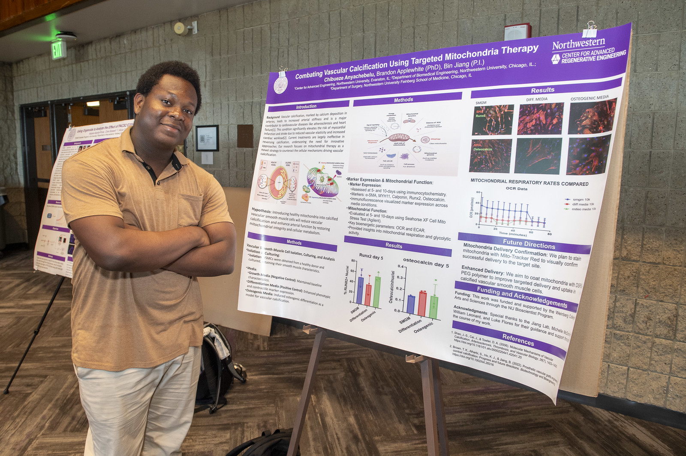

Combating Vascular Calcification with Targeted Mitochondrial Therapy
Northwestern University Bioscientist Research Program · Jiang Lab, Simpson Querrey Biomedical Center · April – September 2024
Vascular calcification (calcium phosphate buildup in blood vessel walls) hardens vessels and is a major driver of cardiovascular disease. I spent a summer investigating whether restoring mitochondrial health in vascular smooth muscle cells could slow or reverse that process, using DSPE-PEG polymer-coated mitochondria as a delivery mechanism, running cell culture, immunocytochemistry, and Seahorse assays to track the results. Presented the findings at Northwestern's WCAS '24 Research Symposium.
Undergraduate SWE Research Assistant
Center for Robotics & Biosystems, Northwestern University · April – December 2025
Built a real-time perception and localization pipeline in Python and C++ using OpenCV, processing live camera feeds at 20–30 FPS and detecting AprilTag/ArUco markers for pose estimation to improve control stability in cluttered environments. Integrated perception outputs into a PyTorch-based reinforcement learning pipeline using reward shaping and policy-gradient methods, enabling smoother trajectories and more reliable sim-to-real transfer across navigation tasks.

Presenting at Northwestern's WCAS '24 Research Symposium

Research presentation poster